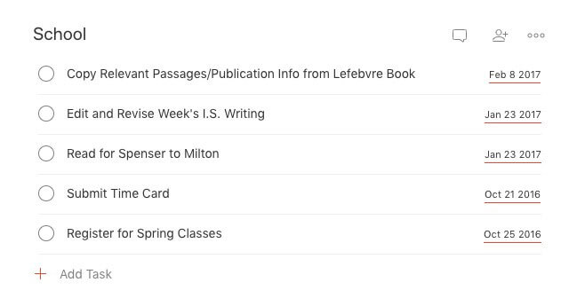
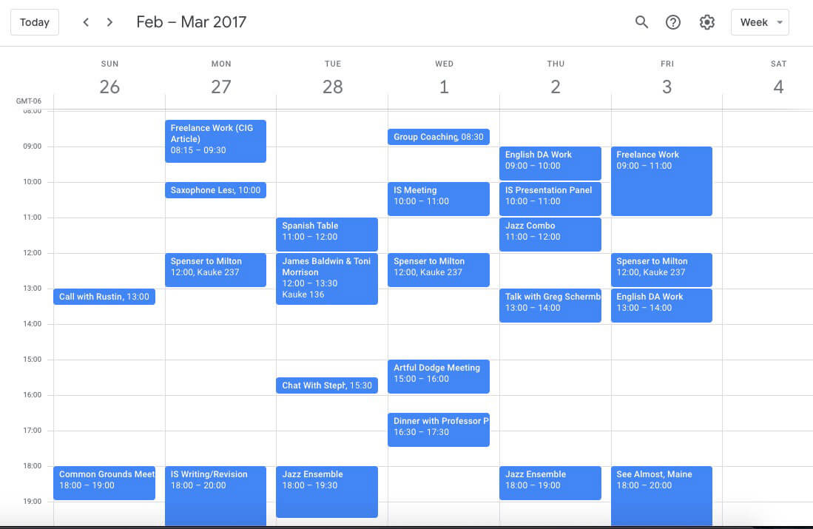
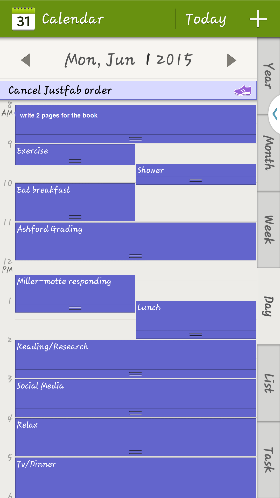

تنظيم الوقت
Time Boxing/BlocKing
هي تقنية عملية جدا لتنظيم وقتك و حياتك العملية ، شائعة بين الأشخاص الناجيحين حدا و أكثر طلبا في العالم ، تعتمد على صراحتك و صدقك و منطقيتك خلال تنظيم يومك؛
ماذا يلزمك ؟
؛Google Calendar تقويم : معظم الهواتف الذكية تتوفر على تقويم ك
؛Google Keep/tasks , to-do list
مذكرة :
مذكرة عادية أو مذكرة هاتفك ك
الفكرة القاعدية
أولاَ : خلال قضاء يوك ستتطرأ عليك أعمال تريد فعلها أو أشياء تريد تذكرها سيكون عليك تدوين هذه الأشياء في مذكرتك و هذا الفعل يأخذ من وقتك بعض الثواني و لكنك بعدها يمكنك نسيان هذه الأشياء مما يخفف عنك الضغط و القلق الخوف من النسيان و مذكرتك مثلا ستكون كالمثال التالي ؛

"Your brain is for having ideas, not storing them" GTD
ثانياً : في صباح يوم غد ، انقل الأشياء و الأعمال التي دونتها في مذكرتك إلى تقويمك و إلى أي يوم في تقويم تراه مناسبا لقضاء هذا العمل ( الهدف هنا ليس جمعها في يوم واحد ) و تقويمك مثلا ستكون كالمثال التالي؛

ثالثاً : بالطبع ستكون هناك أعمال و واجبات في اليوم من تقويمك الذي يوافق يومك الحالي ، لذا سيكون عليك تنظيم هذا الأخير، حيث تعطي لكل عمل فترة زمنية محددة لإنجازه مع تحديد الزمن و مكان لبداية العمل عليه ليبدو كالمثال التالي؛

استعمال التقويم (بصفة دقيقة)؛
أولاَ : انقل الأشياء و الأعمال التي يجب انجازها إلى تقويمك؛
ثانياً : انقل الأشياء و الأعمال التي لم تكملها في اليوم السابق الى أيام القادمة في التقويم ؛
ثالثاً : نظم أشياء و الأعمال التي في يومك الحالي و ذلك برتيبها على حسب أهميتها و حيث تعطي لكل عمل فترة
زمنية محددة لإنجازه مع تحديد الزمن و مكان لبداية العمل عليه ؛
رابعاً : اجمع الأشياء , الأعمال الصغيرة التي تكلف أقل من عشر دقائق في فترة زمنية واحدة ، بكلام آخر اعمل على الأعمال الصغيرة ضربة و حدة ؛
خامساً : لا تتهور و تجمع كل الأعمال في اليوم واحد ظناً منك أنك ستنجزها في هذا اليوم كلها ، لا تفعل ذلك اذا كنت تريد أن تحافظ على ثقتك بنفسك؛
سادساً : يمكنك تغيير الزمن لبداية عمل ما ، لأن هناك أشياء ستطرأ في يومك و يجب أن يكون تقويمك سلسا و ديناميكيا ؛
سابعاً : بين بلوك زمني لعمل ما و بلوك زمني لعمل آخر ضع على التقويم أضف بينها بعض الوقت حتى تتدارك تأخر بين حين و حين ؛
بلوك زمني : هو الفترة الزمنية المحددة لانجاز عمل ما على التقويم
استعمال المذكرة
خلال قضاء يومك ستظهر لك أشياء و أعمال تريد انجازها ، دون هذه الأشياء في مذكرتك حتى لا ترهقك و انت تحاول تذكرها ؛
البدأ من جديد بعد فترة تسويف
بطبع نحن كبشر لسنا مثاليين توقيتك اليومي في بعض الأحيان سيتبخر ، لذا سامح نفسك و ابدأ من جيد فهاذا سيحدث لك دوما حتى لأشخاص أكثر خبرة في المجال ، بجب أن نتقبل تسويفنا شئنا أم أبينا ؛
نصائح
في البداية يجب أن تكون بدايتك بسيطة حتى تبني ثقتك بنفسك؛-
دائما سامح نفسك؛-
ارفض طلبات الناس بلطافة؛ -
لا تهمل وقت راحتك و نومك و لا تكن قاسيا على نفسك؛ -
مارس الرياضة و اشرب الكثير من الماء ؛-